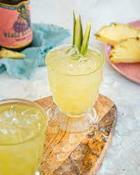

Habanero Syrup

Description
Simple syrup infused with habanero peppers is a spicy and colorful addition to
tequila-based cocktails or even lemonade
Ingredients
- 1 cup of water
- 1 cup white sugar
- 2 habanero peppers
Steps
-
Bring water to a boil in a saucepan.
Slowly stir sugar into boiling water until sugar is dissolved, 2 to 3 minutes. Add habanero peppers to sugar-water mixture, reduce heat to medium-low, and simmer until syrup is thickened and
pepper has slightly colored the syrup,
about 15
minutes.
-
Remove saucepan from heat and let syrup cool, about 1 hour.
Remove peppers from syrup and store syrup in a glass jar.